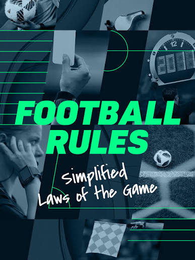

Football (Soccer) Rules
Football, universally known as association football or soccer, stands as one of the oldest, most storied, and widely recognized team sports on the planet. The pinnacle of international achievement in the sport manifests every four years in the form of the FIFA World Cup, which captivates billions of global viewers. On a continental scale, prestigious tournaments like the UEFA Euro Championships, Copa América, and the Africa Cup of Nations showcase the absolute peak of regional talent. Domestically, the sport's most dominant and elite club leagues operate out of Europe, led by England’s Premier League, Spain’s La Liga, Italy’s Serie A, and Germany’s Bundesliga. While much of the globe refers to this beautiful game simply as football, it is widely designated as soccer across North America, Australia, and select parts of the world.
Object of the Game
The foundational objective of football is straightforward yet deeply tactical: a team must score more goals than its opponent within a standard 90-minute playing timeframe. To keep the match organized and physically manageable, this timeframe is split evenly into two distinct halves of 45 minutes each. Following the conclusion of the first 45 minutes, players retire to the dressing rooms for a 15-minute rest period designated as halftime. Once play resumes for the second half, the game clock runs continuously. Any time lost due to substitutions, injury assessments, or tactical time-wasting is meticulously calculated by the referee and appended to the end of each half as injury time (or stoppage time).Players & Equipment
Each team takes the pitch with a maximum roster of 11 active players during live play. This lineup is strictly configured to feature one designated goalkeeper and ten outfield players, who fulfill various defensive, midfield, and attacking roles. While dimensions can fluctuate depending on local stadium constraints, a standard professional pitch measures roughly 120 yards in length by 75 yards in width. The pitch layout requires exact symmetry, meaning each half must be a flawless mirror image of the other in both scale and marking lines. Essential pitch markings include a 6-yard box immediately hugging the goalmouth, a larger 18-yard penalty box surrounding it, and a distinct center circle. To safely engage in a match, players are required to equip standardized gear, including studded football boots for traction, protective shin pads, and matching team kit strips. Goalkeepers are uniquely permitted to wear padded latex gloves, as they are the only players granted legal authority to handle the ball during active gameplay. Each team must also field a designated captain to interface directly with the officiating crew.Scoring
To register a legitimate goal, the entirety of the ball must completely cross over the boundary of the goal line, running precisely between the vertical goalposts and underneath the horizontal crossbar. A goal can be legally scored using any anatomical part of the body, with the strict exception of the hands, arms, and shoulders—extending from the fingertips up to the base of the armpit. The physical architecture of a regulation professional goal consists of a reinforced frame measuring exactly 8 feet high and 8 yards wide, typically backed by a securely fastened net to cleanly catch the ball.Winning the Game
To claim victory in a standard football match, a squad must accumulate a higher final goal count than their opponent by the end of the regulation 90-minute period. If both teams sit at an identical scoreline when the final whistle blows, the contest is officially recorded as a draw or a tie. However, in high-stakes knockout or cup tournament formats where a definitive winner must advance, matches cannot end in a draw. In these scenarios, teams must endure 30 minutes of extra time (split into two 15-minute halves). If the deadlock remains unbroken after this grueling extension, the winner is ultimately decided through a high-pressure penalty shootout, where chosen players face the opposing goalkeeper in one-on-one strikes from the penalty spot. Throughout all phases of play, outfield players must rely solely on their feet, head, and torso to manipulate the ball, and are entirely prohibited from using their hands outside the 18-yard box.The Offside Rule in Football
The offside rule is a critical tactical regulation designed to prevent attacking players from simply "cherry-picking" or loitering near the opponent’s goalmouth waiting for a long pass. An attacking player is officially flagged in an offside position if they are situated in the opponent's half of the pitch and are closer to the opponent's goal line than both the ball and the second-last opponent (which typically includes the last outfield defender plus the goalkeeper) at the exact split-second the ball is passed forward to them.To remain safely onside, the attacker must ensure they are positioned parallel to or behind the second-last defender when the pass is initiated. It is vital to note that a player cannot be penalized for offside if they receive the ball directly inside their own half of the pitch, or if they receive the ball directly from a throw-in, corner kick, or goal kick. If a player is deemed offside when actively participating in the play, the referee will halt the match and award an indirect free kick to the opposing defending team from the exact spot where the infraction occurred.